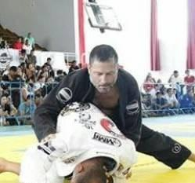
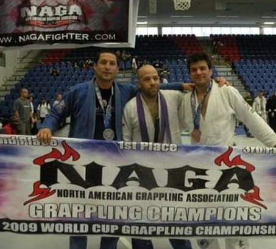

Hugo Castro Muñoz, nacido en Lima, Perú, en 1972, es un experimentado deportista en varias modalidades de combate. Inició su carrera en este ámbito a la edad de 18 años. Actualmente ostenta el grado de Faixa Preta en Jiu Jitsu Brasileño, recibido del mestre Gilberto "Giba" Cardoso en el 2013 y dirige el Team Constrictor Perú desde el 2009 siendo aún cinta marrón del arte bajo Edson Diniz (campeón mundial en 1999, American Top Team). A continuación, tenemos un resumen de su trayectoria:
- Boxeo (1990-1992)
- Entrenamiento bajo la dirección del gran profesor, y ex-contendiente al título mundial, Mauro Mina.
- Kickboxing (1992-2000)
- Entrenamiento dirigido bajo la tutela de Jorge Rocca (cinturón negro en Karate y Taekwondo) y asesorado ocasionalmente por el cinturón negro en Taekwondo Henry Rivasplata (también director de la Federación Peruana).
- En el período 1998-2000, compitió en modalidad Kickboxin, logrando 5 títulos en Lima y 2 a nivel nacional.
- Participó también como seleccionado nacional.
- Judo (1998-2000)
- Dirigido por el cinturón negro Renzo Vidaurraza, instructor del Centro Cultural Peruano-Japonés.
- En el 2000, compitió en el Torneo Nacional de Judo, categoría noveles, logrando el primer lugar en Open Weight.
- Jujutsu/Jiu-Jitsu Japonés (EEUU, 2001-2004)
- Entrenó en EEUU, bajo la dirección del Shihan Rey Pérez, logrando la cinta marrón del arte en el 2004.
- MMA (1996-2009)
- Entrenó junto con su hermano mayor Gonzalo Suárez Muñoz, campeón en peso pesado, y posteriormente emigró a los EEUU, siendo entrenado bajo la tutela de Luis Gutiérrez (Jeet Kune Do black belt y Faixa Preta BJJ, bajo Jean Jacques Machado) y Matt Thorton (Faixa Preta BJJ, también bajo Jean Jacques Machado).
- Debutó profesionalmente con Daniel "la Hiena" Aspe en 1996, en una lucha totalmente pareja, siendo este rival altamente experimentado en boxeo (más de 40 peleas como boxeador amateur). A pesar del resultado adverso, la experiencia fortificó significativamente su conocimiento de la lucha.
- BJJ (EEUU, 2001-2009; Perú, 2009-hasta la fecha)
- Inició su entrenamiento bajo Luis Gutiérrez (Faixa Preta BJJ, bajo Jean Jacques Machado) en One Dragon Martial Arts.
- En 1998, asistió al seminario dictado por Eduardo Mano.
- En 1999, asistió al seminario dictado por Fabio Gurgel.
- En 2000, asistió al seminario dictado por Renzo Gracie.
- 2001-2003: compitió 3 veces en los torneos NAGA (North American Grappling Association), logrando un primer lugar, un tercer lugar y un cuarto lugar en la cinta blanca.
- 2004: recibe cinta azul bajo Luis Gutiérrez (Faixa Preta, Machado Jiu Jitsu).
- 2004-2007: compite como cinta azul en la NAGA, 7 veces, logrando un primer lugar, cuatro segundos puestos, un tercer lugar y un cuarto lugar.
- 2005: recibe el distintivo del mejor cinta azul en categoría Master, en el estado de Florida, EEUU.
- 2007: recibe la faixa roxa (cinturón púrpura), bajo Luis Gutiérrez (Faixa Preta, Machado Jiu Jitsu).
- 2007: entrenó con Edson Diniz (Faixa Preta, American Top Team), por 6 meses.
- En 2009: regresa a Lima, Perú, para enseñar BJJ y MMA en la escuela La Molina KO, logrando que sus estudiantes obtengan los primeros lugares y campeonen en diversos eventos de tales modalidades de combate.
- En septiembre del 2012, recibe el 4to dan de la cinta marrón en BJJ, bajo Gilberto "Giba" Cardoso (faixa preta, 4to dan, BJJ).
- En septiembre del 2013, recibe la faixa preta en BJJ, bajo Gilberto "Giba" Cardoso (faixa preta, 5to dan, BJJ).
Actualmente, está enfocado en la enseñanza y promoción del arte suave, y bajo su dirección el Team Constrictor participa activamente en diversos eventos clave, tales como los torneos TBBJP, Copa Katana, Torneos Kimura, FFC (MMA), entre otros.

Lo que cada practicante de BJJ debe aprender con el ejercicio del arte:
- Humildad.
- Voluntad.
- Respeto.
- Perseverancia.
- Constancia.
- Solidaridad.
¡Oss!